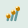

Unterhalb des Hauptmenüs befindet sich eine Symbolleiste, mit der die aktuellen Einstellungen geändert werden können. Am unteren Ende des Hauptfensters befindet sich die Statusleiste, auf der die aktuellen Einstellungen ersichtlich sind. Im folgenden werden die Schaltflächen der Symbolleiste und die Texte in der Statusleiste vorgestellt und ihre Funktion erläutert (eine genaue Beschreibung der Funktion finden Sie im Kapitel Assistent zum Lehrgang und Abfragemodus):
Jedes Symbol auf der Symbolleiste hat einen entsprechenden Text an derselben Position in der Statusleiste.
Die erste Schaltfläche erlaubt es, aus den definierten Stofflisten eine als aktuelle Stoffliste auszuwählen. Die im folgenden beschriebenen drei Schaltflächen beziehen sich alle auf diese aktuelle Stoffliste und erlauben es, den Lernstoff einzuschränken.
Diese Schaltfläche dient zur Änderung der Stoffspitze festlegen.
Mit Hilfe dieser Schaltfläche lässt sich die taxonomische Stufe ändern.
 Diese Schaltfläche dient zur Änderung der Reihenfolge.
Das aktuell ausgewählte Taxon kann mit Hilfe dieser Schaltfläche festgelegt werden.
Mit den beiden Symbolen am Ende der Symbolleiste wird die Position des aktuellen Taxons im Lernstoff geändert.